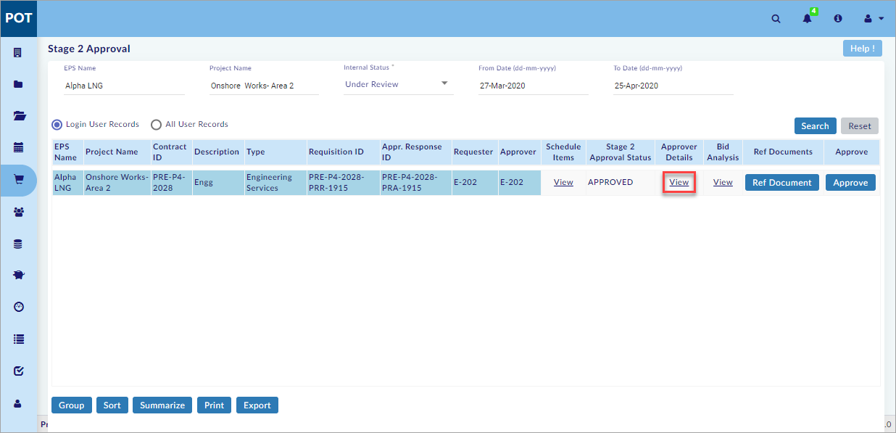

Stage 2 Approval
This is the Final Phase of the Procurement Process. Request(s) moved for Approval are seen here. Approver approves Request. Approved Request is moved to Purchase Orders.
You can view and perform the following in the Stage 2 Approval Section:
- Search the Existing Records
- View the Schedule of Items
- View the Approver Details
- Execute Bid Analysis
- Open the Bid Analysis window
- Send Back to Requestor
- Hold the Bid
- Reject the Bid
- Add Reference Documents
- Approve the Stage 2 Request
- Request for Additional Time
- Generate the Purchase Order (PO)
Search Existing Records:
This section helps you to search the existing records.
To search the existing records, do the following.
- Select the EPS Name or Project Name and the Enterprise Projects window opens as shown in the figure.

- On the Enterprise Projects window, select the project and click
 .
. - Select the internal status from the Internal Status drop-down menu.
Note:
- User can select from the following, from the Internal Status drop-down menu.
- Under Review
- On Hold With Approver
- Approved
- Rejected
- Select From Date and To date.
- Select Login User Records to search the records of the logged-in user (or select All User Records to search the records of all the users).
- Click Search available on the right side of the screen.
- The search results are shown on the screen as shown in the figure.
Note:
- Already created records (Records related to default search criteria) are available on the search results, without performing a search.
- Pre-contracts not available for given search criteria warning message is shown, if Pre-contracts are not available for the selected project, internal status or date range.
- Login User Records is selected by default.
- To Date is the current date and From Date is one month before the current date by default.
- Click Reset to reset the screen to the default view.
You have successfully searched the existing records.
View Schedule of Items:
This section helps you to view the schedule of items.
To view the schedule of items, do the following.
- Search the existing records. (See the Search Existing Records Section above)
- Click View as shown in the figure.
- External Stage2 Request window opens as shown in the figure.
- Select the required tabs (Materials, Plants, Services, and Project Sub Contract) and view the schedule of items.
You have successfully viewed the schedule of items.
View Approver Details:
This section helps you to view the approver details.
To view the approver details, do the following.
- Search the existing records. (See the Search Existing Records Section above)
- Select View as shown in the figure.

You have successfully viewed the approver details.
Execute Bid Analysis:
This section helps you to execute bid analysis.
Open Bid Analysis window:
This sub-section helps you to open the bid analysis window.
To open the bid analysis window, do the following.
- Search the existing records. (See the Search Existing Records Section above)
- Select View as shown in the figure.
The Bid Analysis window opens as shown in the figure.
You have successfully opened the bid analysis window.
Send Back to Requestor:
This sub-section helps you to send back the record to the requestor.
To send back the record to the requestor, do the following.
- Open the bid analysis window. (See the Open Bid Analysis window sub-section above)
- Write approver comments in Approver Comments text field.
- Click to send back the record to the requestor.
Note:
- When User click on “Send back to Requestor” the record is moved back into Stage 2 Request sub-module under Status - “Returned with Comments”.
- On the Stage 2 Request sub-module, select Internal Status – “Returned with comments” and click Search, and then click View under Bid Analysis.
- User can again click on “Send for Approval” on the Bid Analysis window, by which record is moved to Stage 2 Approval sub-module with Status as “Under Review”.
You have successfully sent back the record to the requestor.
Hold Bid:
This sub-section helps you to put the bid on hold.
To put the bid on hold, do the following.
- Open the bid analysis window. (See the Open Bid Analysis window sub-section above)
- Write approver comments in Approver Comments text field.
- Click to put the bid on hold.
Note:
- When User click on “On Hold”, the Record is displayed under “On Hold with Approver” Status, and Response Status is updated with value as “On Hold”.
- Select Internal Status – “On Hold With Approver” and click Search, and then click View under Bid Analysis.
- For Records with “On Hold” status, the “Release” button is displayed. User can click on Release by which Record is again moved into “Under Review” Status.
You have successfully put the bid on hold.
Reject Bid:
This sub-section helps you to reject the bid.
To reject the bid, do the following.
- Open the bid analysis window. (See the Open Bid Analysis window sub-section above)
- Write approver comments in Approver Comments text field.
- Click
 to reject the bid.
to reject the bid.
Note:
- When User click on the “Reject” button, the Record is displayed under “Rejected” status.
- User cannot perform any further operations on the Rejected Record.
You have successfully rejected the bid.
Add Reference Documents:
This section helps you to add the reference documents.
To add the reference documents, do the following.
- Search the existing records. (See the Search Existing Records Section above)
- Click
 and the Reference Documents window opens as shown in the figure.
and the Reference Documents window opens as shown in the figure.

- Click
 to create Single/Multiple Reference Document(s).
to create Single/Multiple Reference Document(s). - Enter Description and Version.
- Click to choose the document from your computer.
- Click
 to save the Reference Document(s).
to save the Reference Document(s).
Note:
- Select the Reference Document(s) and click
 to delete Single/Multiple Reference Document(s).
to delete Single/Multiple Reference Document(s).
You have successfully added the reference documents.
Approve Stage 2 Request:
This sub-section helps you to approve the bid.
To approve the bid, do the following.
- Search the existing records. (See the Search Existing Records Section above)
- Click and the Bid Analysis Stage2 Approval window opens as shown in the figure.
- Write approver comments in Comments text field.
- Click to approve the bid.
Note:
- Stage 2 Approved Record gets moved under Internal Status –“Approved”.
- User can Generate PO by selecting Approved Record.
You have successfully approved the bid.
Request for Additional Time:
This is related to project settings. In case of delay (Exceeding time set in Projects > Project Settings > Procurement in approval of a pre-contract, the approver has to request additional time (Approve button gets disabled).). In order to raise a notification for additional time for approval, the user need to click on add time – additional time and generate a notification, by following the process of approval in Project Settings, Approve button gets enabled.
Generate Purchase Order:
This sub-section helps you to generate the purchase order.
To generate the purchase order, do the following.
- Search the existing records. (See the Search Existing Records Section above)
Note:
- Select Approved from the Internal Status drop-down menu.
- Select the Record (click anywhere in the area) as shown in the figure.
- Click Generate Single/Multiple PO available on the bottom right of the screen.
- The Generation Of Single Purchase Order window opens as shown in the figure.
- Enter all the required details.
- Click and the List of Appendices for Purchase Order/Sub Contract window opens as shown in the figure.
- Click and the Reference Documents window opens as shown in the figure.
- Click
 to create Single/Multiple Reference Document(s).
to create Single/Multiple Reference Document(s). - Enter Description and Version.
- Click
 to choose the document from your computer.
to choose the document from your computer. - Click
 to save the Reference Document(s).
to save the Reference Document(s).
Note:
- Select the Reference Document(s) and click to delete Single/Multiple Reference Document(s).
- Click to view the schedule of items.
- Click to add and save the terms and conditions.
- Close the List of Appendices for Purchase Order/Sub Contract window and then click
 to save the purchase order details.
to save the purchase order details.
You have successfully generated the purchase order.